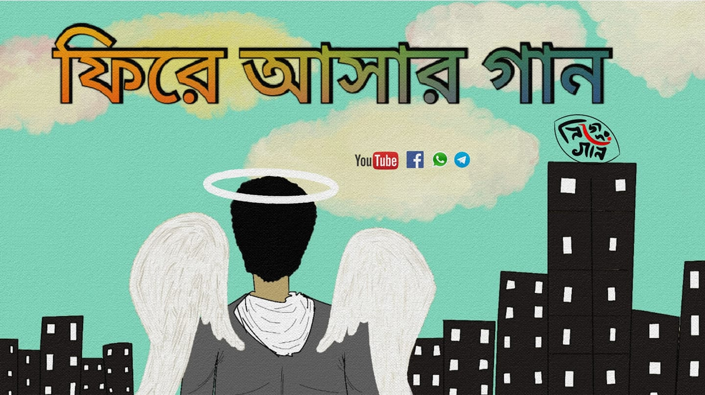

Song credits :
Lyrics - Arghyadeep Chowdhury
Tune - Indrajit Bala
Vocals - Arghyadeep Chowdhury,Rajib Dutta, Indrajit Bala
Violin - Debraj Chakraborty
Guitar - Indrajit Bala
Cajon & Percussion - Niladri Madhab Biswas
Animation - Rajib Dutta
Videography & Edited by - Jayanta Pathak
Special Thanks : Debraj Chakraborty, জ্যেঠিমা ও দিদি & Team Nijeder Gaan
Check it out Our Facebook Page 👇

Lyrics :
ফিরে আসার গান :
আবার আমার বাঁচার আশা পাশে এসে দাঁড়ায়,
ফের তোমায় ছোঁয়ার আশা শরীর জুড়ে থামে,
মুক্তির আলোর থেকে জোরালো পিছুটান
মন তোমার কাছে থেকেই গেলো।
যতদিন আছি এভাবেই ভালোবেসো,
সময় শেষে শেষ নিঃশ্বাসে ছেড়ে যেও।
এই তো আর কিছুদিন.. এতো রাগ কোরোনা,
দোহাই তোমার তুমি আর কেঁদোনা,
আমায় এক বিরাট বাসা দিচ্ছে ওরা
এই মহাকাশে
উড়ে-ঘুরে বেড়াবো
কখনো তোমার আশেপাশে।
বিদায় বিদায় ভালো থেকো প্রেয়সী,
স্মৃতি রেখোনা; কিছু মনের গভীরে
অজথা কষ্ট পাবে চুকাও হিসেব
আর পথ ছাড়ো ফেরার সময়
ঘনায় বিশ্বজুড়ে,
শোনো শোনো শোনো জেনে রেখো,
আমি আবার জন্ম নেবো
তখন আবার তোমার হবো
(তখন শুধুই তোমার হবো)
এখন আমায় জাপটে ধরো।।